File list
This special page shows all uploaded files.
{kind=link}
| Date | Name | Thumbnail | Size | User | Description | Versions |
|---|---|---|---|---|---|---|
| 19:53, 15 December 2015 | Xmas0.png (file) | 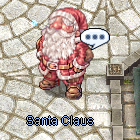 | 55 KB | Adri | 1 | |
| 20:12, 15 December 2015 | Xmas1.png (file) | 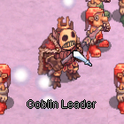 | 41 KB | Adri | 3 | |
| 19:47, 15 December 2015 | Xmas2.png (file) | 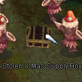 | 38 KB | Adri | 1 | |
| 19:53, 15 December 2015 | Xmas4.png (file) | 43 KB | Adri | 1 | ||
| 20:40, 15 December 2015 | Xmas5.png (file) | 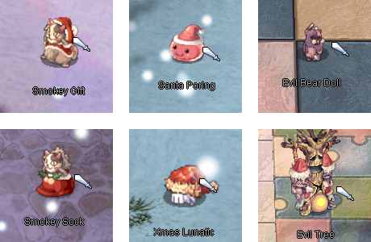 | 224 KB | Adri | 2 | |
| 20:49, 15 December 2015 | Xmas6.png (file) | 43 KB | Adri | 1 | ||
| 03:28, 1 December 2020 | XmasCat.gif (file) | 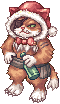 | 3 KB | Hatsumei | 1 | |
| 02:01, 9 November 2020 | Xmas smokey gift g.gif (file) | 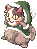 | 6 KB | Randomced859 | 1 | |
| 23:22, 17 March 2019 | YOYO.gif (file) | 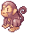 | 4 KB | Panic | 1 | |
| 10:16, 29 March 2021 | YUN Kasis.png (file) | 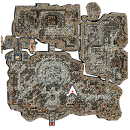 | 41 KB | Egg | 1 | |
| 10:16, 29 March 2021 | YUN Nehris.png (file) | 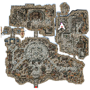 | 45 KB | Egg | 1 | |
| 10:16, 29 March 2021 | YUN OldBS.png (file) | 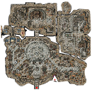 | 42 KB | Egg | 1 | |
| 10:16, 29 March 2021 | YUN Zhenbolt.png (file) | 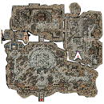 | 42 KB | Egg | 1 | |
| 23:24, 24 November 2015 | YellowDroopingCat.gif (file) |  |
201 bytes | Lai | 1 | |
| 23:24, 24 November 2015 | YellowMageHat.gif (file) | 343 bytes | Lai | 1 | ||
| 23:25, 24 November 2015 | YellowRibbon.gif (file) |  |
132 bytes | Lai | 1 | |
| 11:19, 15 November 2015 | Yellowbox.png (file) | 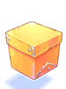 | 8 KB | Adri | 1 | |
| 18:54, 12 November 2015 | Yellowribbon.png (file) | 4 KB | Adri | 1 | ||
| 15:11, 3 February 2016 | Ygg Berry.png (file) | 7 KB | Aristiel | 1 | ||
| 15:09, 3 February 2016 | Ygg Seed.png (file) | 6 KB | Aristiel | 1 | ||
| 17:12, 21 March 2018 | Yggdrasil.png (file) | 9 KB | Pinkpanda82 | 1 | ||
| 01:33, 18 September 2015 | Yggleaf.png (file) | 379 bytes | AloeLeaflet | 1 | ||
| 04:08, 7 February 2017 | Yota.png (file) | 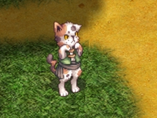 | 92 KB | Zanni | 1 | |
| 12:34, 4 September 2016 | YouTube-social-square red 128px.png (file) | 4 KB | Mayo | 1 | ||
| 17:33, 3 November 2015 | Youtube.png (file) | 17 KB | Adri | 1 | ||
| 12:35, 4 September 2016 | Youtube2.png (file) | 4 KB | Mayo | 1 | ||
| 19:48, 4 September 2016 | Youtube3.png (file) | 2 KB | Mayo | 1 | ||
| 02:42, 27 October 2019 | YoyoPetWindow.jpg (file) | 6 KB | Randomced859 | 1 | ||
| 19:53, 10 January 2021 | Yulia.gif (file) | 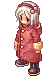 | 35 KB | Arbor | 1 | |
| 02:22, 23 February 2022 | YulySig.png (file) | 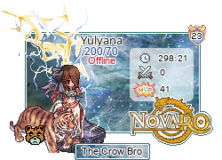 | 64 KB | Melzdash | 1 | |
| 10:39, 11 October 2019 | Yuno fild04.gif (file) | 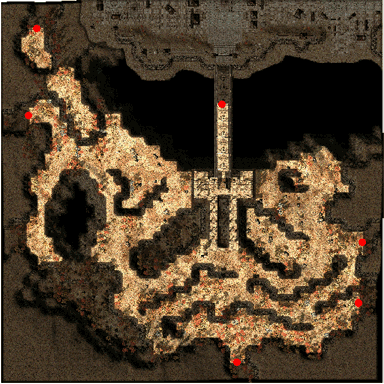 | 99 KB | Alice | 1 | |
| 11:11, 17 October 2019 | Yuno fild11.gif (file) |  |
91 KB | Alice | 1 | |
| 07:32, 1 December 2020 | Yvhonne.gif (file) | 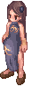 | 11 KB | Hatsumei | 1 | |
| 20:33, 27 May 2019 | ZOMBIE MASTER.gif (file) | 10 KB | Seandh | 1 | ||
| 05:30, 19 October 2022 | Zaedronath.png (file) | 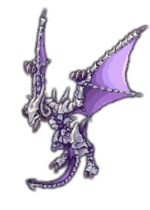 | 92 KB | HairyWizard | 1 | |
| 20:05, 19 October 2022 | Zaedronath Firestorm.gif (file) |  |
1.86 MB | HairyWizard | 1 | |
| 05:55, 19 October 2022 | Zaedronath Tornado.gif (file) | 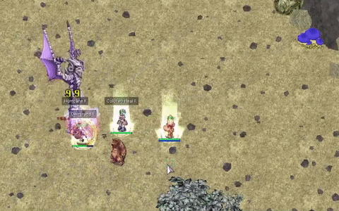 | 1.62 MB | HairyWizard | 1 | |
| 14:15, 3 January 2020 | Zapshroom.jpg (file) | 63 KB | Submarine | Zapshroom node. | 1 | |
| 23:46, 16 September 2015 | Zargon.png (file) | 357 bytes | AloeLeaflet | 1 | ||
| 02:43, 27 October 2019 | ZealotusPetWindow.jpg (file) | 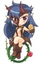 | 8 KB | Randomced859 | 1 | |
| 13:58, 23 November 2018 | Zenorc1.png (file) | 23 KB | AloeLeaflet | 1 | ||
| 13:58, 23 November 2018 | Zenorc2.png (file) | 21 KB | AloeLeaflet | 1 | ||
| 01:02, 18 September 2015 | Zenorcfang.png (file) | 419 bytes | AloeLeaflet | 1 | ||
| 23:02, 10 February 2019 | ZeroMap.png (file) | 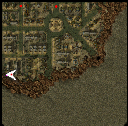 | 36 KB | Hatsumei | 1 | |
| 13:58, 23 November 2018 | Zipandpeach1.png (file) | 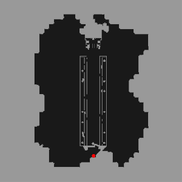 | 23 KB | AloeLeaflet | 1 | |
| 21:21, 7 October 2016 | Zombie.gif (file) |  |
25 KB | Seandh | 1 | |
| 03:50, 26 October 2020 | ZombiePet.png (file) | 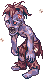 | 2 KB | Randomced859 | 1 | |
| 06:26, 26 October 2020 | ZombiePrisonerPet.png (file) |  |
2 KB | Randomced859 | 1 | |
| 06:18, 26 October 2020 | ZombieSlaughterPet.png (file) | 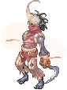 | 4 KB | Randomced859 | 1 | |
| 03:05, 8 May 2019 | Zonemap.png (file) | 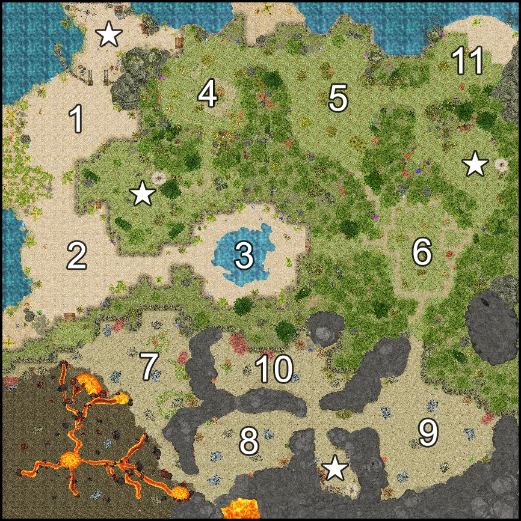 | 1.8 MB | Panic | 1 |
{kind=link}
{kind=link}
{kind=link}
{kind=link}
{kind=link}
{kind=link}
{kind=link}
{kind=link}
{kind=link}
{kind=link}
{kind=link}
{kind=link}
{kind=link}
{kind=link}
{kind=link}
{kind=link}
{kind=link}
{kind=link}
{kind=link}
{kind=link}
{kind=link}
{kind=link}
{kind=link}
{kind=link}
{kind=link}
{kind=link}
{kind=link}
{kind=link}
{kind=link}